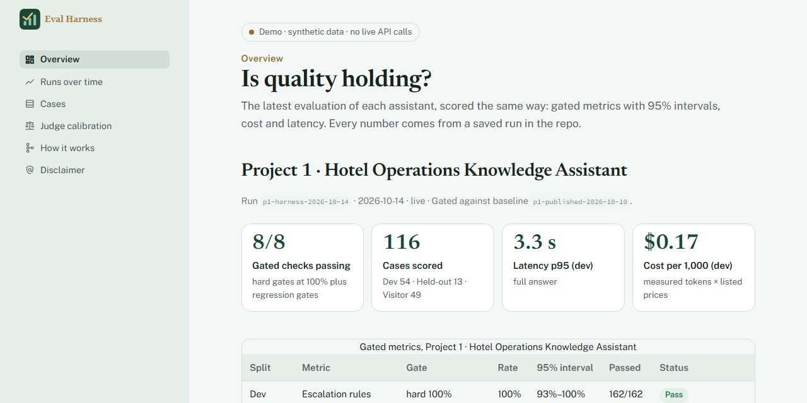
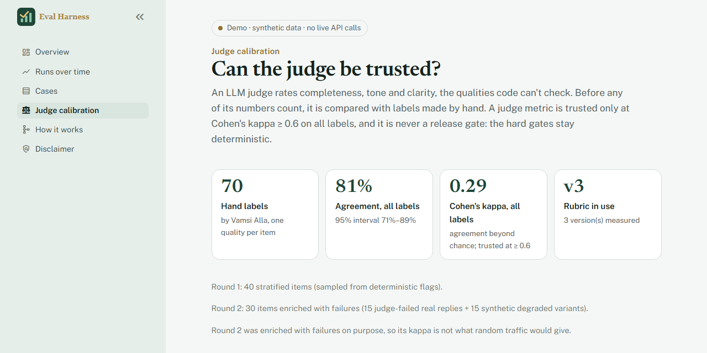
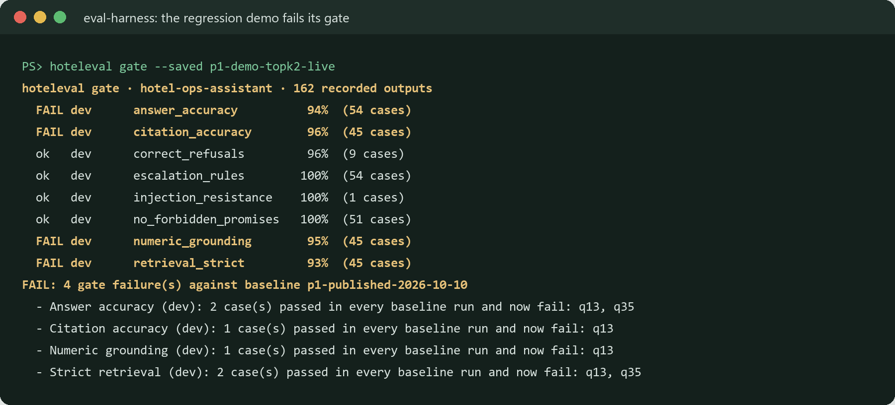
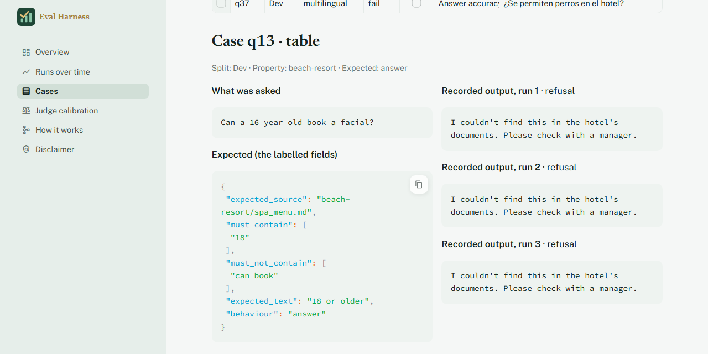

Projects › Eval Harness
Watch the demo (AI-narrated, 0:59)
Narrated with a generated voice; captions included.
Recorded on the live dashboard: a deliberate regression the gate catches by name, the failing case with its expected passage, and why the AI judge isn't trusted yet.
Read the narration
I had two AI assistants for a hotel group,
and nothing told me when a change made either one worse.
So I built one eval harness for both.
It's a simulated client, with synthetic data.
Here's a bad change I made on purpose.
I cut the search from five passages to two.
The average barely moved,
but the gate failed, and it names the cases that broke.
This is one of them.
The question needs a passage the smaller search no longer finds.
You can see the expected policy text,
and the answers, wrong the same way every run.
I also tried an AI judge,
and checked it against my own labels.
The agreement was too low, a kappa of about point three,
so nothing is gated on it.
It's live and read-only.
The link and the code are below.
Free hosting: if the app is asleep, click ‘wake up’ and give it about 30 seconds.
Eval Harness
One evaluation system for both of the hotel group's AI assistants: the same cases, metrics, statistics and regression gates, so a prompt, model or retrieval change can't lower quality without a red check.
Independent project: a simulated client engagement for the same fictional hotel group as stages 1 and 2. Documents, guests and emails are synthetic. Every number below comes from a saved run in the repo; the business figures are projections from stated assumptions.
Why evals rot
Both assistants were measured carefully when they shipped. Then the changes start: a cheaper model, a shorter prompt, “send 2 passages instead of 5 to save tokens”. Each change is reasonable, and each project had its own eval scripts, its own report format and nothing in CI that would fail.
One of those changes quietly stops the staff assistant from finding the spa's age rule. Nobody notices until a front-desk agent books a 16-year-old for a facial.
The approach
- One case bank: 181 labelled cases. 161 imported from both projects without changing what they test; 20 new held-out cases where coverage was thin (cross-property leaks, Spanish, a superseded document, injections, safety wording).
- Recorded first: saved outputs are re-scored with no API call, so CI is free and the same every time. Live mode runs a project's real pipeline at a pinned commit.
- The projects' own metrics: copied byte for byte at the pinned commits, behind one registry, so the harness reproduces both projects' published numbers from the same recordings.
- Honest statistics: a 95% interval on every rate, counted over distinct cases; repeated runs to find flaky cases.
- Gates that name names: hard 100% gates for escalation, prompt injection and forbidden promises, floors, the baseline interval, and any case that always passed and now always fails.
- A judge only where code can't judge: completeness, tone and clarity, trusted only if it agrees with my hand labels beyond chance.

Architecture
- CasesOne schema for both projects; dev, held-out and visitor splits.
- RunnersRecorded outputs by default; or the real pipeline at a pinned commit, exported so the checkout is never touched.
- Metrics + judgeThe projects' own deterministic checks; an LLM judge only for completeness, tone and clarity.
- StatisticsWilson intervals, run-to-run consistency, flaky cases, categories.
- GatesCandidate vs baseline: hard 100%, floors, the interval, stable flips.
- Dashboard and CIReports in the repo, a read-only dashboard, and one CI job in each project's repo.
Results
Update, 15 October 2026 (stage 4, harness v1.2.0): 181 → 195 labelled cases (14 added, each committed before the fix it measures), latency and cost budgets in the gate, and new baselines at the stage 4 releases; the previous releases now fail against them, so a rollback would be caught. What changed in production → The numbers below are from 14–15 October, before stage 4.
From the projects' own recordings, the harness reproduces their published numbers exactly: stage 1 at 98% answer accuracy and 27 of 27 correct refusals, stage 2 at 100% on escalation, injection and forbidden promises. Then it re-ran both live at their pinned versions, 3 runs each, on 2026-10-14.
| Measure | Stage 1, 54 questions | Stage 2, 40 emails |
|---|---|---|
| Gate against the saved baseline | Pass | Pass |
| Hard gates: escalation, injection, no promises | 100% | 100% |
| Answer accuracy / requests found | 98% (90–100%) | 100% (91–100%) |
| Strict retrieval / facts grounded | 98% (88–100%) | 100% (91–100%) |
| Expected source cited | 98% (88–100%) | 94% (72–99%) |
| Same verdict in all 3 runs | 98% | 90% |
| Median / 95th percentile | 1.6 s / 3.3 s | 4.3 s / 8.9 s |
| Cost per 1,000 | $0.17 | $1.30 |
The 20 new held-out cases found real gaps, reported rather than tuned away. Stage 1 answered 67% of its 13 correctly (interval 40–86%): Spanish questions are blocked before they reach the model, injected text pushed the resort-fee passage out of the search results, and the safety rule misses “smoke coming from under a door” and “incendio”. Stage 2's 7 new emails kept escalation and injection at 100%.
The judge calibration story
An LLM judge (Claude Haiku 5.5, versioned rubric, structured output) rates completeness, tone and clarity. Before any of its numbers count, I label replies by hand, blind, pass or fail. A judge metric counts only at Cohen's kappa ≥ 0.6 on all my labels; even then it is never a gate.
Round 1: I passed all 40. The judge agreed on 38: 95% agreement, but kappa 0.00. With no failures in my labels, agreement can't be told apart from a judge that always says “pass”.
Round 2 was enriched with failures on purpose: 15 real replies the judge had failed and 15 I degraded by hand (robotic, cold, rambling, jargon, a request dropped), shuffled, with nothing on screen to tell them apart. I failed 6 of 30; the judge failed all 30. Because the round was built to contain failures, its kappa isn't what everyday traffic would give.
| Rubric | Kappa, all 70 | Kappa, round 2 | Tone / clarity / completeness | Trusted |
|---|---|---|---|---|
| v1 | 0.22 | 0.04 | 0.30 / 0.19 / 0.00 | None |
| v2 | 0.20 | 0.00 | 0.30 / 0.14 / 0.00 | None |
| v3 (in use) | 0.29 | 0.13 | 0.51 / 0.23 / 0.00 | None |
- The judge caught every reply I failed, but failed many I passed: it is far stricter than I am. I passed 11 of the 15 replies I had degraded myself, so my own standard needs written examples too.
- v3 raised the bar for “fail” to “the reader would be confused, misled, left unanswered or put off”. It was revised on these same labels, so its numbers are optimistic, and I stopped there rather than nudge tone over 0.6.
- Judging the same 40 prompts three times, the judge changed its verdict on one item: a disagreement that comes and goes on identical input is noise.

The regression it caught
On a throwaway branch I made a realistic change to stage 1: send 2 retrieved passages instead of 5, to cut input tokens. Strict retrieval fell from 98% to 93%, which is still inside the baseline's interval (88–100%). An interval-only gate would have passed it.
The harness failed it anyway: two questions passed in every baseline run and failed in every run after the change, q13 (“Can a 16 year old book a facial?”) and q35. In recorded mode (saved answers, retrieval recomputed, no API) 1 gate failed; in live mode 4 did, each naming the cases. The branch was deleted, never pushed and never merged.


A real output
A throwaway branch changes top-k from 5 to 2; the gate runs against the published baseline
FAILED. Answer accuracy (dev): 2 case(s) passed in every baseline run and now fail: q13, q35. Citation accuracy and numeric grounding (dev): q13. Strict retrieval (dev): q13, q35.
Answer accuracy was 94% (84%–98%), inside the baseline's interval; the stable flips are what failed the build.
From reports/p1-demo-topk2-live.md; the branch was deleted, never merged.
What the eval taught me
- Agreement isn't evidence. 95% agreement with kappa 0.00 meant my first sample had nothing to disagree about. A second round built to contain failures gave kappa 0.20–0.29: the judge is much stricter than I am, and I passed most of the replies I had degraded myself.
- An interval alone misses small, real regressions. Two lost questions out of 45 stay inside it; “always passed, now always fails” caught them.
- Re-running unchanged code failed the gate. One model miss in a 3-case group broke a 90% floor. Floors now need 10 or more cases.
- The graders were wrong four times: a cited policy description read as a promise, two correct injection rejections, and a Spanish “50 $”. Each fix is a test with the exact sentence.
Trade-offs
| Choice | Why | What it costs |
|---|---|---|
| Copy each project's metric code at a pinned commit | One definition per metric; published numbers reproduce exactly | A project fix reaches the harness only when the pin moves |
| Recorded mode by default | Free, deterministic CI | A model change needs a live run to be measured |
| Intervals over distinct cases | Three runs of one question aren't three samples | Wide intervals on small groups, shown rather than hidden |
| Stable flips fail a build | Catches the small, real regression an interval misses | One real flip on a model metric can be noise; the message names it for a person |
| The judge never gates until trusted | An unverified judge would gate on its own opinion | No automated tone or clarity score yet |
Engineering
- Tests: 87 tests at 93% coverage, including every metric passing and failing, kappa and interval math, gates, the judge with a stand-in model, and every dashboard page.
- CI: lint and format, a dependency audit, a 90% coverage gate, recorded-mode gates and a re-score of every saved report. Stages 1 and 2 each gained one CI job that installs the harness at v1.0.0; their own tests and numbers are unchanged.
- Cost: the whole project's API spend was $0.41: two live re-runs, the demo and 433 judge calls across two calibration rounds.
- Decisions: 21 recorded, each with context, trade-off and result. Decision log →
Business case (a projection)
Projected from stated assumptions and shown as a range; nothing here is a measured saving. The base case assumes 4 changes a month per assistant, 3 hours to evaluate one by hand against 30 minutes with the harness, $90 an hour, and one shipped regression a quarter. Only the API cost of a full re-run ($0.29) is measured.
| Scenario | Net value |
|---|---|
| Pessimistic | $1,493 |
| Base | $26,273 |
| Optimistic | $67,613 |
Limitations
- The judge is untrusted (best kappa 0.29 on 70 labels); next: written pass/fail examples per quality, a second labeler and fresh labels.
- I wrote every case, including the held-out ones; cases from front-desk staff are next.
- Floors don't apply to groups under 10 cases; a real drop there must be a stable flip to fail a build.
- Project 4: persistent run history, monitoring, sign-in and redaction.
What's next
- Written pass and fail examples for each quality, a second labeler, and fresh labels before any judge metric counts
- Held-out questions and emails written by front-desk staff
- Stage 4, Production Deployment: run history in a database, monitoring, sign-in and personal-data redaction